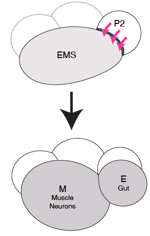
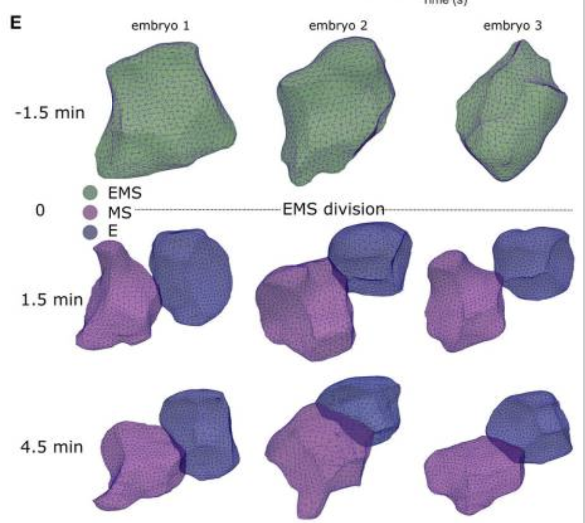

Introduction and motivation
Cells propagate via cell division. In multicellular organisms, certain cells divide asymmetrically, which results in generating cell diversity (Jan and Jan 1998). There are several cues for asymmetric cell division, including cell polarity establishment, spindle positioning, division site specification (Li 2013), and signals from neighboring cells (Horvitz and Herskowitz 1992). These cues allow multicellular organisms develop correctly, and their misregulation can lead to disorders from developmental defects to cancer.
In Caenorhabditis elegans four cell stage embryos, the endomesodermal precursor (EMS) cell gives rise to mesoderm and endoderm cells. For this asymmetric division, the EMS cell receives signals from a neighboring P2 cell (Rocheleau et al. 1997). In response to them, the daughter cell closest to the P2 cell develops into endoderm, and its sister develops into mesoderm (Goldstein 1992) (Figure 1). In situations where the signal is absent, both EMS daughters develop into mesoderm, and the embryo is non-viable.

In the EMS division, daughter cells appear to adopt different shapes (Caroti et al. 2021). Additionally, the shape of daughter cells changes if Wnt signaling is absent. It is possible that these differences are correlated to the fate of the daughter cells. If gradual, these differences could also be used to identify the strength of cell response to external cues, such as Wnt signaling. It is also possible that before the birth of the E and MS cells, the shape of the EMS cell changes in response to external cues. Analysis of the EMS cell shape in different contexts could therefore prove to be a useful tool to understanding differentiation and development. Finally, developing quantitative size and shape analysis tools can reduce human bias and help speed up the experimental procedures in both understanding EMS and its daughters’ fates.

There are several different methods to analyze shapes and sizes. Given that different analysis tools yield different results (Dryden and Mardia 2016, 37), it is helpful to consider a few before finding the best tool for subsequent use.
Centroid size analysis
Centroid analysis is a tool to measure the size of a shape on Cartesian coordinates and is defined by (Dryden and Mardia 2016, 34)as:
\[ S(X) = \sqrt{\sum_{i=1}^{k} \sum_{j=1}^{m}\left( X_{ij} - \bar{X}_j \right)^2}, \quad X \in \mathbb{R}^{k \times m} \]
Where \(X_{ij}\) is a matrix entry, and \(\bar{X}_j\) is a mean of the j’th dimension of the matrix.
Centroid is a simple tool to estimate size of a shape and could help to easily quantify differences between different cell groups in a sample, for example, EMS or E cell with and without a signal from the P2 cell.
Euclidean distance matrix analysis (EDMA)
EDMA is a version of multidimensional scale analysis that accounts for a bias in landmark distribution (Dryden and Mardia 2016, 357–60). This analysis focuses on distances between landmarks and can handle missed landmarks (Lele 1993). This method corrects for landmark distribution biases and can be used to test for shape differences (EDMA-I and EDMA-II).
While centroids are useful in estimating size of a shape, EDMA can be helpful in finding differences in shape itself. There are a number of other tools to estimate shape differences, including square root velocity (SRV) function - a landmark-independent tool for analysing differences in shape and curvature (Srivastava et al. 2011). Independence from landmarks might result in more precise shape comparisons, however, it renders analysis computationally intensive. Analysis of the dividing EMS and E/MS cells can be performed using any of these methods, the easiest being centroid size estimation, which does not account for shape differences. Incorporating more complex analysis tools would allow for more understanding in how the cell shape changes. Additionally, it could be extrapolated to more complex analyses, such as time series or 3D images. These tools could help further understand what affects EMS daughter cells and whether their shape is linked to their fate.